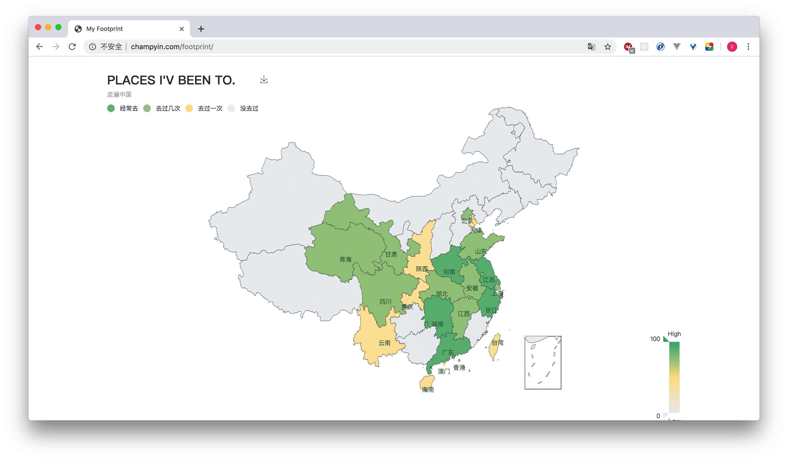

一直有个环游世界的梦，周游列国，体验不同国家的人类文明，寻山访水，体验造物主大自然的伟大造化。毕竟人生不止眼前的苟且，还有诗和远方。这么多年以来，陆续走过了一些地方，每到一个地方，都让我离梦想又近了一些。虽然我知道这比起环游世界来说，还差不知道多少个山头，但是我一直在往这个梦努力，靠近。希望终有一天，我可以笑着对自己说，你做到了！
6年前，因为工作的原因，我接触过地图应用的开发，从那时起，我对地图的热爱就埋在了心底。今年年中我带爸妈旅了旅游，去了一些我没去过的地方，我好想有个地图可以让我点亮一下，记录一下我到过的新的“领土”。搜了下市面上已经存在的地图应用，都不是我想要的，唯一比较符合我的需求的是百度旅游里面的一个小功能，叫做足迹地图，但是似乎早就停止了维护，数据停留在2016年。。。
找不到趁手的工具，那就自己打造一把。是啊，为什么不自己开发一个呢？说干就干。
首先用 cyt-cli 快速搭建项目框架。cyt-cli地址
cyt-cli是一款可以快速创建前端工程的脚手架，具有比较完善的webpack4配置，目前支持纯js、vue、react等语言版本。
如果没有安装cyt-cli，先全局安装一下：npm i -g cyt-cli。
cyt-cli create footprint
✔ fetching template ...
? please choose a template to create roject (Use arrow keys)
❯ swan-template
swan-vue-template
swan-react-template 因为想快速做出雏形来，所以使用最简单的模版就行，选择第一个 swan-template。
等待一会，工程就搭建好了。
生成的工程目录：
|--build/ # webpack配置文件
| |-- webpack.base.js
| |-- webpack.dev.js
| |-- webpack.prod.js
|--public/ # 首页模版
| |-- index.html
|--src/
| |-- assets/ # 静态资源，比如中国地图数据
| |-- components/ # 项目组件
| | |-- foo.js
| | |-- bar.js
| |-- icon/ # 字体图标
| |-- images/ # 图片资源
| |-- theme/ # 样式文件
| |-- index.js # 项目入口
|--.babel.js # babel配置
|--.browserslistrc.json # 浏览器支持规则
|--.gitignore
|--package.json
|--postcss.config.js # postcss插件配置
|--README.md安装一下依赖包。
cd footprint
npm i地图展示我选择了 echarts。 echarts官网
npm i --save echarts我的核心需求很简单，就是可以把我去过的国家、省、市在地图上展示出来即可。
先实现国内的省，开发逻辑很简单：
echarts按需引用
import echarts from 'echarts/lib/echarts';
import 'echarts/lib/chart/map';
import 'echarts/lib/component/tooltip';
import 'echarts/lib/component/title';
import 'echarts/lib/component/visualMap';
import 'echarts/lib/component/legend';
import 'echarts/lib/component/toolbox';给series的data用。
let handleData = function(rawdata) {
rowData.forEach(item => {
item.value = FREQUENCY[item.value]
if (item.value !== NEVER) {
item.label = { show: true, color: LEBEL_COLOR }
}
if (item.value === NEVER) {
never.push(item);
} else if (item.value === ONECE) {
onece.push(item);
} else if (item.value === AFEWTIMES) {
afewtimes.push(item);
} else {
usually.push(item);
}
});
series = [usually, afewtimes, onece, never].map((item, index) => {
let temp = {
type: 'map',
map: mapType,
roam: true,
itemStyle: {
emphasis: { label: { show: true } },
areaColor: '#fff'
}
};
temp.name = legendData[index];
temp.data = item;
return temp;
})
}
handleData(userData);mapecharts有个registerMap方法，echarts.registerMap(mapName, geoJson, specialAreas).
- mapName：地图名称，一定要与option->series->map对应的值相同。
- geoJson：GeoJson格式的数据，具体格式见 http://geojson.org/。
- specialAreas：可选。将地图中的部分区域缩放到合适的位置，可以使得整个地图的显示更加好看。geoJson是地理信息数据，一般都很大，当然通过异步获取。
util.get('assets/china.json').then(data => {
let chinaJson = data;
myChart.hideLoading();
// 注册地图
echarts.registerMap(mapName, chinaJson, {})
})ECharts3提供的矢量地图数据，在4版本后已经不提供下载服务了。官网的解释是“由于部分数据不符合国家《测绘法》规定”。不过，只要不商用，这些矢量数据还是可以使用的。有需要可以到我这里获取 https://github.com/yc111/echarts3-geojson
注册地图后进行其他配置
// 指定图表的配置项和数据
let option = {
color: _color,
title: _title,
tooltip: _tooltip,
legend: _legend,
visualMap: _visualMap,
toolbox: _toolbox,
series: series
};
// 使用刚指定的配置项和数据显示图表
myChart.setOption(option);花了大概一天时间，雏形做好（感觉很大一部分时间在调地图颜色...）。我把项目部署在了github page上，但是每次build之后，都要手动部署，太麻烦。
于是我用 Travis CI 给项目做了持续集成，现在只要代码一提交，就会自动部署了。
具体关于Travis的详细配置，可以参考我的另一篇文章：利用Travis CI+GitHub实现持续集成和自动部署
项目预览地址：http://champyin.com/footprint/

暂时还比较简陋，并且只支持省。以后我会把世界地图，和城市地图都加进来（毕竟也是出过境的人，哈哈），实现地图下钻，并且优化用户数据设置，不断完善下去。
项目源码地址：https://github.com/yc111/footprint
欢迎star。如果你喜欢，可以fork本项目，然后打造属于你自己的足迹应用。
--
欢迎转载，转载请注明出处：
https://champyin.com/2019/09/27/%E5%88%A9%E7%94%A8echarts%E5%B1%95%E7%A4%BA%E6%97%85%E8%A1%8C%E8%B6%B3%E8%BF%B9/
本文同步发表于：
利用echarts展示旅行足迹 | 掘金